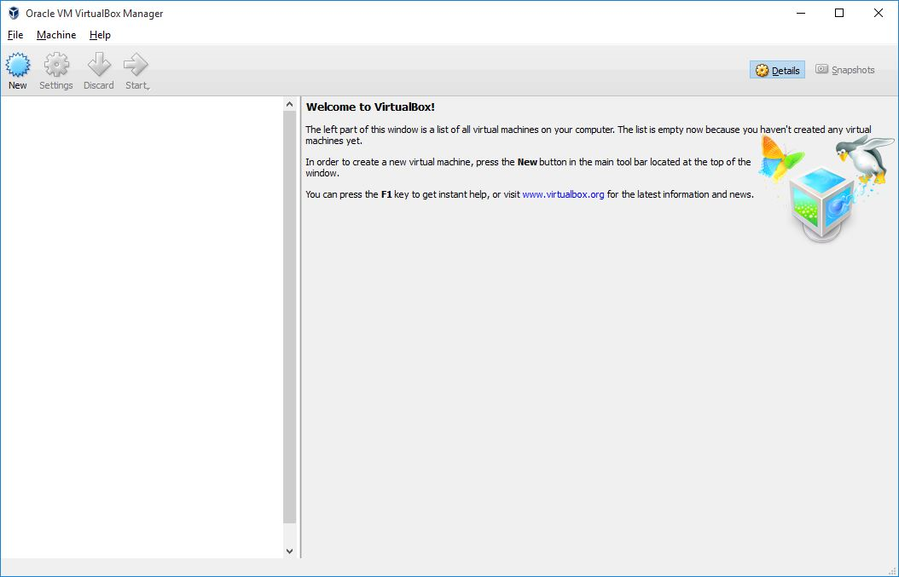
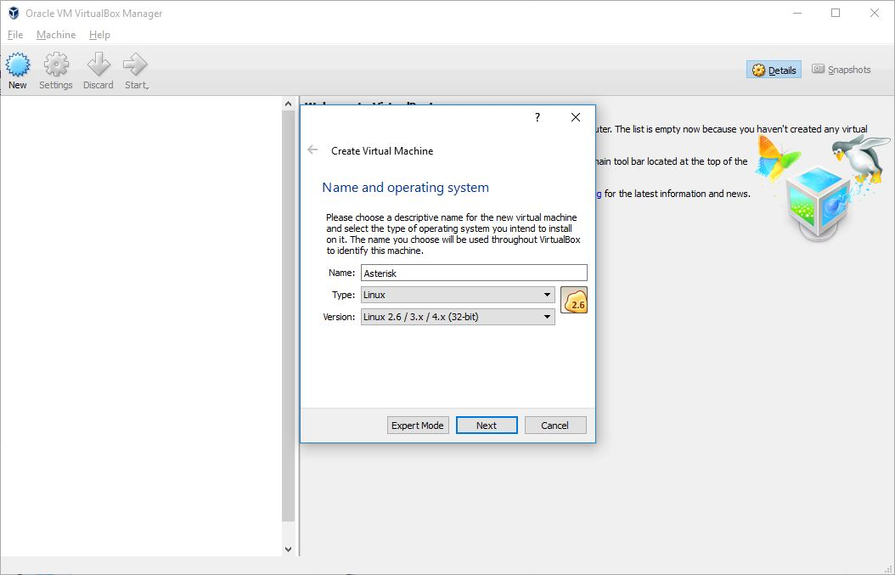
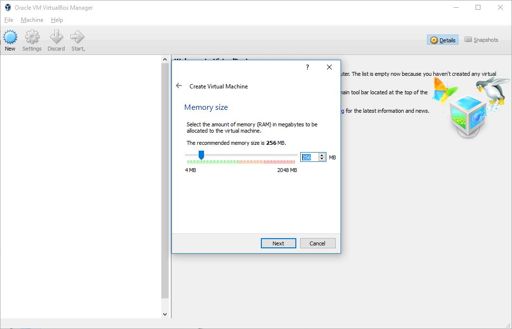
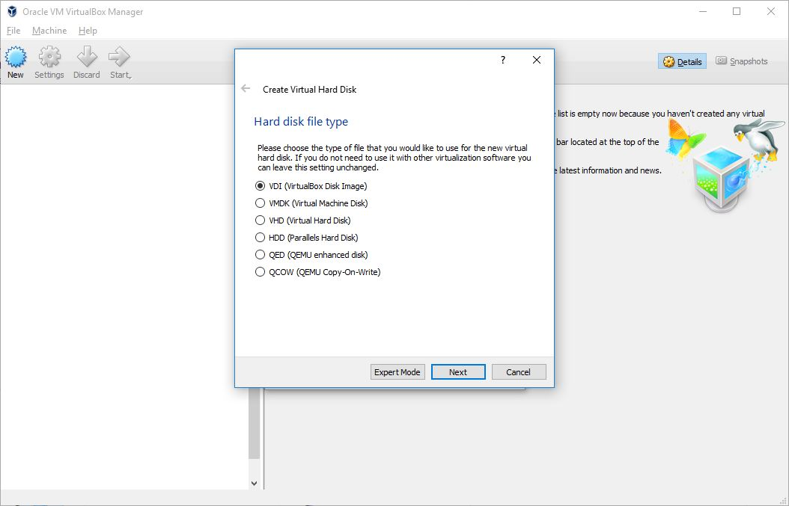
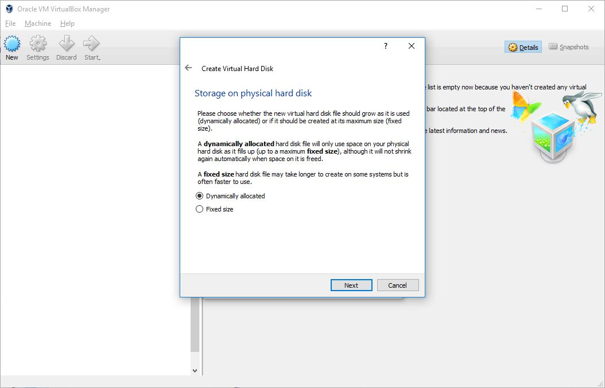
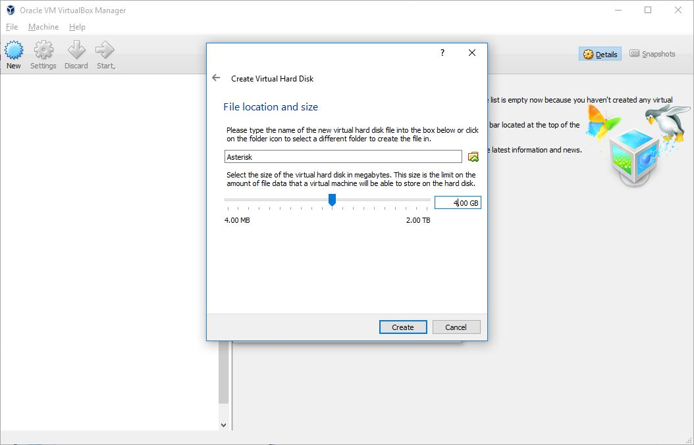
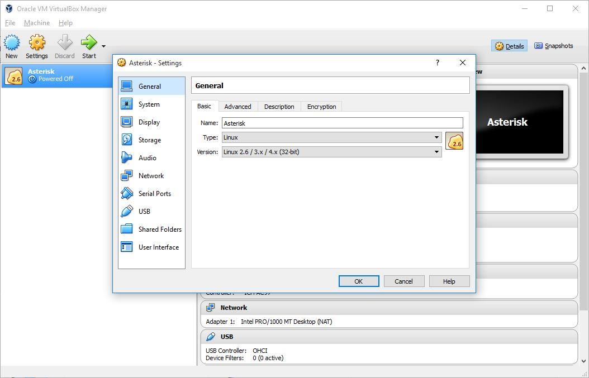
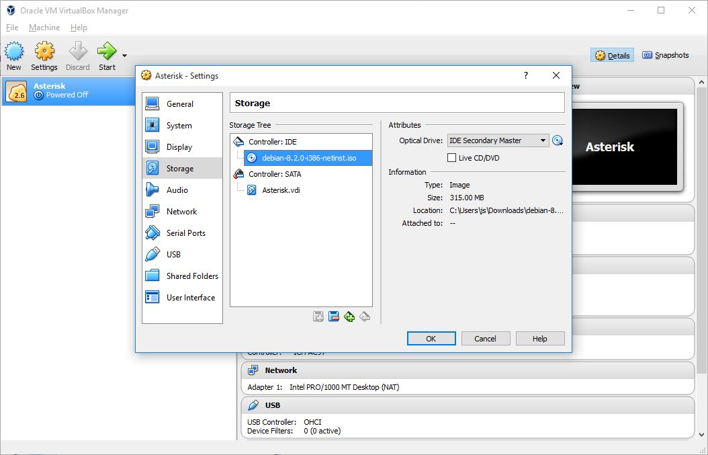
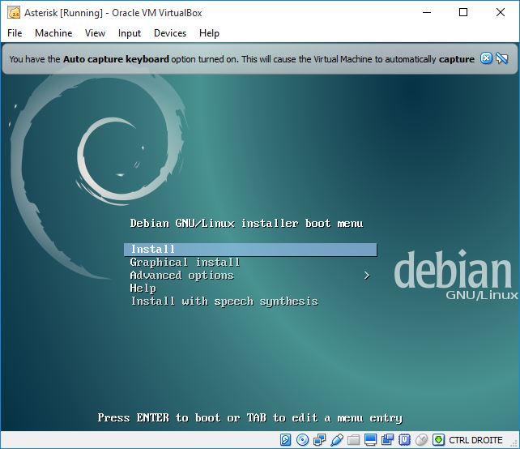

Installation de VirtualBox et préparation pour Debian

Créez une nouvelle machine en cliquant le bouton "New"

Donnez un nom à votre machine virtuelle (ex : Asterisk).
Sélectionnez le type "Linux"/"Linux 2.6 / 3.X / 4.x (32-bit)
Ce paramètre permet à VirtualBox d'optimiser automatiquement ses paramètres (CPU, Mémoire, Comportement de virtualisation ...)

Notre Linux ne disposera pas d'interface graphique.
256 Mo de RAM seront donc suffisant.
Ce paramètre peut être changé même après l'installation du système d'exploitation. Il suffira alors de redémarrer la machine pour que la nouvelle RAM soit prise en compte.

Créez un nouveau disque.
Vous pouvez aussi a cette étape récupérer un VDI d'une autre machine par exemple.
ATTENTION : Pour pouvoir copier un VDI il faut éteindre la machine virtuelle, sinon le fichier est inexploitable.

Utilisez le format de fichier VDI qui est le format par défaut de VirtualBox.

Utilisez "Dynamically Allocated". Dans ce mode, votre fichier VDI n'occupera que la taille effective des fichiers de la machine virtuelle.
Ainsi même si vous avez demandé un disque de 8Go, le fichier VDI ne fera cette taille qu'une fois le disque dur de la machine virtuelle entièrement rempli.

Pour notre TP, l'idéal est d'avoir un disque d'une taille de 8go.

Laissez le nom par défaut proposé pour le fichier VDI. Par défaut, il prend le même nom que votre machine virtuelle.

IMPORTANT : Configurez le mode réseau en "Bridge" en utilisant la carte réseau avec laquelle vous êtes connectée au réseau local.
En mode bridge, votre machine virtuelle disposera de sa propre adresse IP sur le réseau, et sera donc considéré comme une machine sur celui ci.
Ce mode de fonctionnement est obligatoire dans notre TP, car nous aurons a faire communiquer les serveurs de téléphonie des différents groupes.

Enfin, nous aurons à installer notre système Debian. Comme sur une machine physique nous allons donc "insérer" le CD de Debian dans le lecteur "virtuel" de VirtualBox
Sélectionnez l'image Debian que vous avez téléchargé.

En cliquant sur "Start" votre machine virtuelle démarre et vous tomberez normalement sur le premier écran d'installation de Debian.